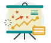

Messaging determines whether the right visitor takes the right action.
Knowing the person, group, or groups you want to reach and why they would care is the first step to a Marketing plan. Knowing exactly what it is you do, why you do it, and why these people would care, with wallets open, is at the root of success in a non-profit organization. Keep in mind that what is critical to one person may be noise to the next, so make skimming and navigation simple, whether on your website, social media, or in advertising. Try not to waste time entertaining the world and focus on the people who share your mission or need a product you offer.
The path to grow: our approach in ten slides
Building a stronger Nonprofit
 Small – under 1M in annual donations
Small – under 1M in annual donations Committed to getting better together
Committed to getting better together Open to tackling current realities
Open to tackling current realities

Clarify Products and Services

Website Concept

Map Work Processes with Key Data
Draft Input Form Styles & Access

Form goals, tracking & responsibility Form Access and Welcome?
Form Access and Welcome? Data storage
Data storage
Conceptual Business Dashboards
 KPI (Key Performance Indicators) measure success
KPI (Key Performance Indicators) measure success Source Data for accurate insights
Source Data for accurate insights Audiences (Board, Management, Staff Roles…) to tailor
Audiences (Board, Management, Staff Roles…) to tailor

Marketing Strategy